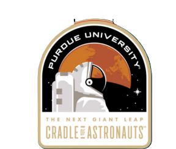
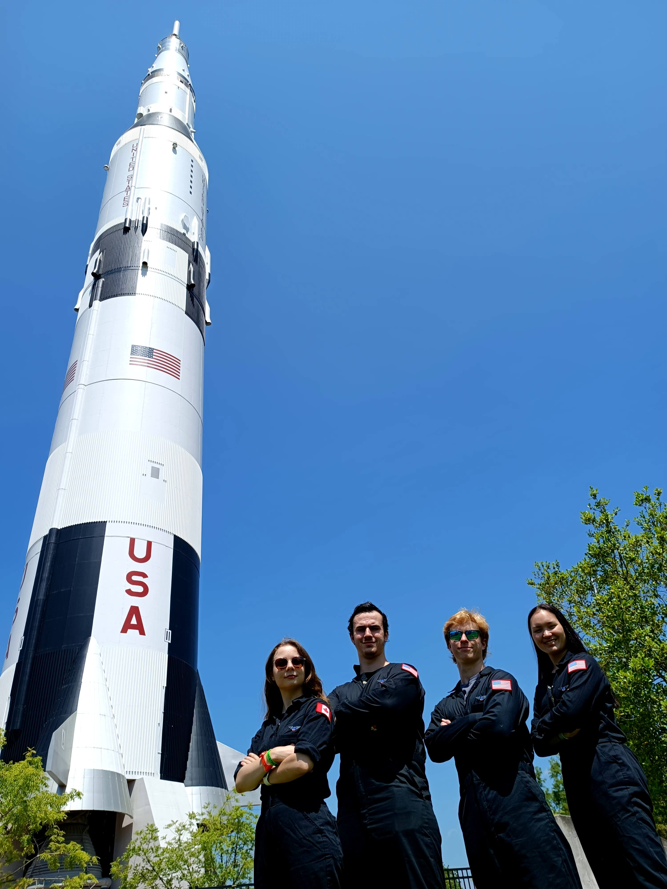
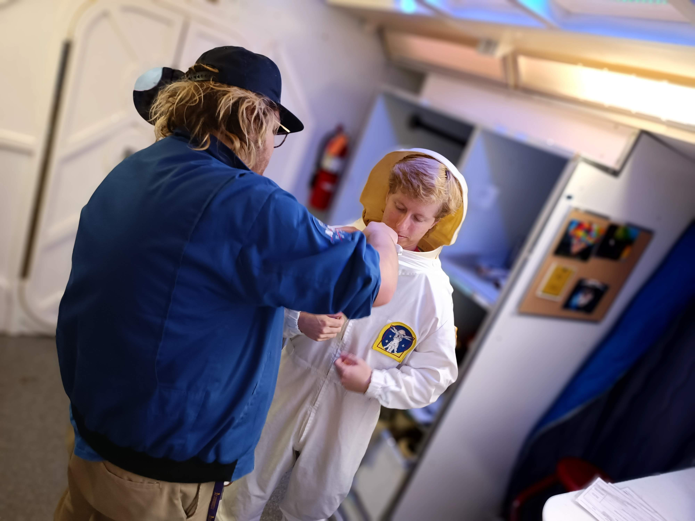

About the Mission
 In Purdue's Space and Earth Analogs Research Chapter (SEARCH), we not only dream of the impossible, but work to make it a reality. Since 2022, we have coordinated the recruitment and logistical planning of Purdue's Mars Desert Research Station (MDRS) analog astronaut crew alongside The Mars Society. In our newest collaborative initiative with Purdue Space Program (PSP) and Purdue Lunabotics, the Student-Analog Astronaut Training Program (SA2TP), we are reaching higher than ever before, truly bound by nothing but our lofty aspirations of making space exploration accessible for all. We're going places, And we can't wait to meet you there.
About SA2TP
A program unlike any other, the SA2 TP aims to build a community of space-minded individuals that train, network, and learn together in an environment that supports their career aspirations. For the program's inaugural run, the top 6 applicants (both graduate and undergraduate students) will be selected to explore the themes of Science and Technology, Health and Fitness, and Astronautics and Spaceflight over 3 weeks of intensive training, taking place from July 24 to August 13, 2023. We are collaborating with industry experts and organizing a number of skill-building activities, including 3D printing challenges, hackathons, flight tests, fitness/nutrition workshops, and more. The SA2TP will culminate in the once-in-a-lifetime experience of attending NASA's Adult Space Academy (Aug. 11-13) in Huntsville, AL, where our participants will put their new skills to use and experience a simulation of life as an astronaut candidate.
Goals
Science and Technology
Astronauts must have a comprehensive knowledge of science, technology, engineering, and math (STEM) to solve space exploration's 2biggest challenges in real time. The SA2TP is leading coding hackathons, space agriculture workshops, 3D printing challenges, and more for participants to learn to think like an astronaut.Health and Fitness
A healthy astronaut corps in mind, body, and soul is essential to ensure a successful mission. Space psychology, nutrition, and fitness 2workshops during the SA2TP will highlight the challenges the human body experiences in space and educate on mitigation strategies.Astronautics and Spaceflight
Co-led by PSP and Lunabotics, SA2TP participants will gain a firsthand understanding of the mechanical systems keeping space missions alive, including rocket propulsion and human-rover interfacing.
Activities
Astrodynamics
- Intro to Orbital Mechanics Lecture
- Astrodynamics Simulation Workshop
- Kerbal Space Program Team Bonding Challenge
Health
- Space Nutrition Seminar with former CSA space nutrition specialist Katherine Dulong
- Space Psychology Seminar
- Fitness Sessions
Mechanical
- Intro to Rocketry Lecture
- Cubesat Lecture and Workshop
- Rover Autonomy and Sensors Lecture
- Rover Mechanical Design Lecture (CAD, FEA Workshop)
- Rover Demonstration and Operation
Technical Skills
- Simulations Lectures and Workshops
- 3D Printing Challenge
- SA2TP Hackathon
- Test Flights
Survival Skills
- Orienteering and Celestial Navigation Crash Course
- First Aid Seminar
- Essential Survival Skills
Soft Skills
- Outreach Workshop
- Space Program Selection and Planning
- All About the Astronaut Experience with Sirisha Bhandla
- Space Policy Seminar with Prof. Dan Dumbacher